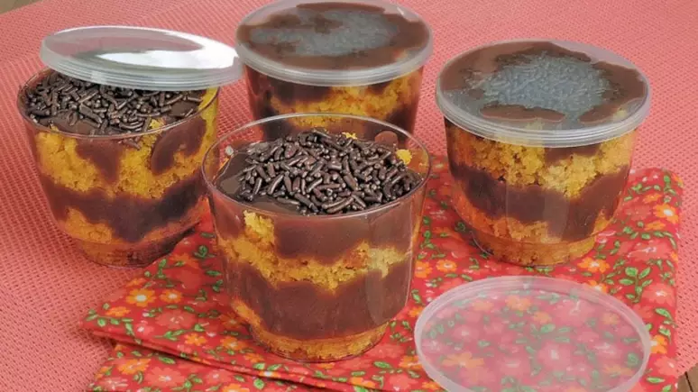

Bolo de cenoura de pote

Descrição:
Ingredientes:
- 4 ovos
- 3 cenouras raladas
- 3/4 de xícara (chá) de óleo
- 2 e 1/2 xícaras de açucar
- 3 xicaras de cha de farinha de trigo
- 1 colher de fermento em pó
- margarina e farinha de trigo
- chocolate granulado
Cobertura
- 1 colher de manteiga
- 4 colheres de chocolate em pó
- 1 lata de creme de leite
Como fazer
- Bata no liquidificador os ovos, a cenoura, o óleo e o açúcar até homogeneizar.
- Despeje em uma tijela, acrescente a farinha e o fermento peneirados, e misture com uma colher ou espátula até ficar homogenio
- Despeje em uma fôrma de 24cm de diâmetro untada e enfarinhada, e leve ao forno médio, preaquecido, por 35 minutos ou até assar e dourar
- Deixe amornar, desenforme e esmigalhe grosseiramente com as mãos.
- Em uma panela, leve ao fogo baixo o leite condensado, a manteiga e o chocolate, mexendo sempre, e cozinhe por 3 minutos, após iniciada a fervura, ou até engrossar e desgrudar do fundo da panela.
- Deixe esfriar e misture com o creme de leite.
- Em potes plásticos individuais, intercale camadas de bolo esmigalhado e de brigadeiro, até acabarem os ingredientes, terminando em brigadeiro.
- Polvilhe com granulado, tampe e sirva em seguida ou mantenha na geladeira até o momento de servir.